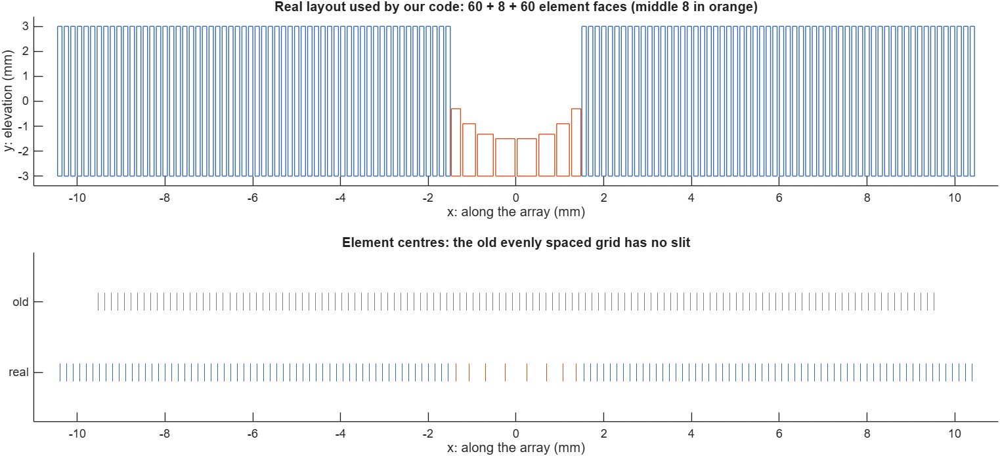
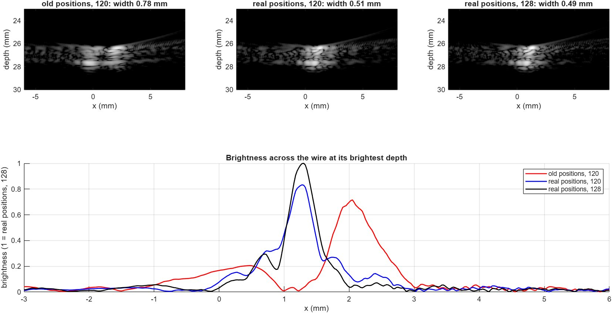
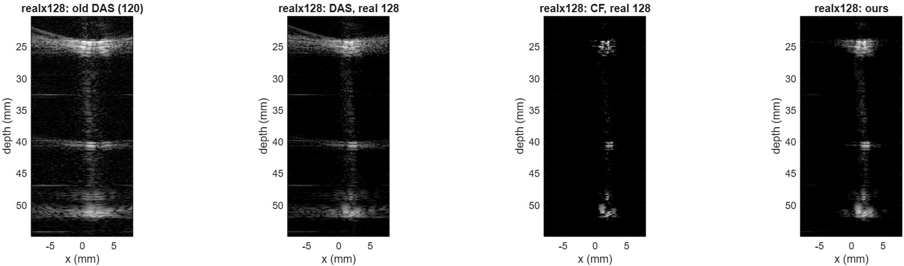
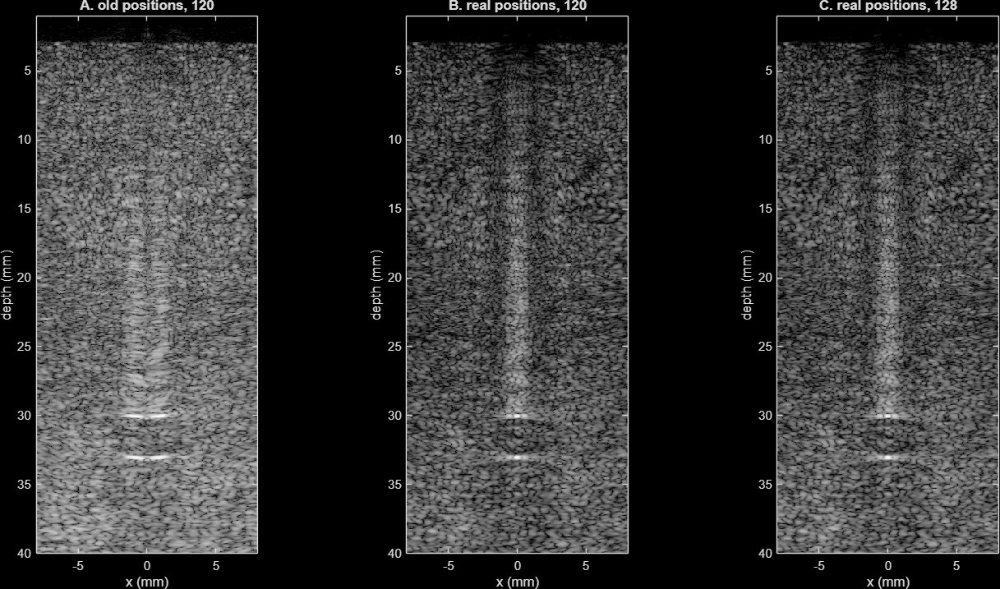

Work / Custom Variable-Pitch Ultrasound Transducer Beamforming for Needle Guidance
Custom Variable-Pitch Ultrasound Transducer Beamforming for Needle Guidance
- Working with the WPI Medical FUSION Lab
Skills MATLAB, Verasonics, Field II, Signal processing
When a surgeon removes a kidney stone through the skin, they guide a needle into the kidney while watching it on ultrasound. With a normal probe the needle goes in next to the probe, and it is easy for it to drift out of the thin slice the probe can see.
The Japan Probe JAR526 fixes that with a 3 mm slit cut through the middle of its face, so the needle goes straight through the probe and stays in the image. The cost is that the 128 elements are no longer evenly spaced. There are 60 on each side, 0.15 mm apart, and eight smaller, oddly spaced ones tucked under the slit.

The problem
An ultrasound image is built by beamforming. Every element fires at once, and for each pixel you work out how long the echo from that spot would take to reach each element, read each element's signal at that moment, and add them up. If something is really there, the readings line up and add to a bright spot. If not, they cancel out.
The math only works if you know where every element is. The code the lab had been using put all 128 elements on one even grid, as if the slit wasn't there, and switched off the eight under the slit. That puts each half of the probe 0.875 mm too close to the middle. That is about five times the error the timing can tolerate, so the two halves of the probe each see a target in a slightly different place, and one point shows up as two.

What I built
A beamformer in MATLAB that takes a list of real element positions instead of assuming a grid, so the same code works for any layout. The slit elements' positions and sizes aren't given on the manufacturer's drawing, so we measured them from the scanned drawing.
On top of plain delay-and-sum (DAS), we implemented three methods from the research literature that weigh how well the elements agree with each other: the coherence factor (CF), delay-multiply-and-sum (DMAS) and short-lag spatial coherence (SLSC). SLSC normally assumes neighbouring element numbers are neighbouring positions, which isn't true here: elements 60 and 69 are next to each other in the list but 3.1 mm apart. So we computed spacing from the real positions instead.
We also reprogrammed the Verasonics research system with the measured positions, so its own live image uses the real geometry, and added switches to record with either layout and with the slit elements on or off.
Testing
We tested everything first in Field II, a standard ultrasound simulator that models each element's real shape, then on the real system: a wire in a water tank, a wire with a needle through the slit, and a CIRS tissue phantom with wire and grey-scale targets.
With the real positions, small targets got about twice as sharp, in simulation and in the lab. A wire in the water tank went from 0.78 mm wide to 0.49 mm. On the phantom, a wire target went from 1.29 mm to 0.58 mm. The eight slit elements barely changed the image, which makes sense: they cover only 3 mm of the 21 mm probe.

A combined beamformer for the needle
None of the four methods was best at everything. CF showed the needle most clearly but broke the surrounding tissue up into dark patches. DAS kept the tissue looking right but showed the needle only faintly. So we built a combined beamformer that keeps the best of both.
A needle through the slit always shows up as a long vertical line, while tissue has no structure like that. The coherence factor stays high all the way along the needle, but in tissue it jumps around from pixel to pixel. So we average the coherence factor over a tall, narrow window, 2 mm deep and 0.3 mm wide, take its square root, and multiply the DAS image by it. Along the needle the average stays high, so the needle keeps its brightness. In tissue it settles to an almost constant value, so the background is dimmed evenly instead of broken up. We picked this form out of eleven combinations of DAS, CF and DMAS, scored against the same criteria.
- Needle contrast went from 4.7 to 18.8 in one scan and from 1.9 to 6.5 in another, compared with DAS on the same recordings.
- Compared with the old reconstruction, needle contrast went from 3.4 to 18.8.
- In the Field II simulation the needle stood 20.2 dB above the tissue, up from 13.0 dB.
- Tissue texture barely changed: speckle SNR went from 1.89 to 1.65, where CF alone dropped it to 0.70.

